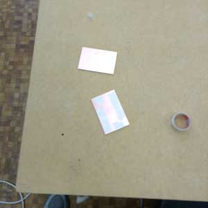
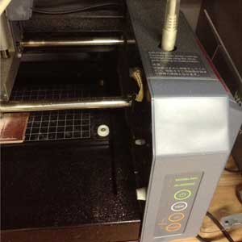
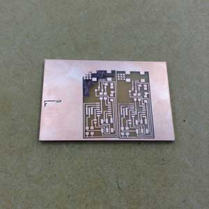
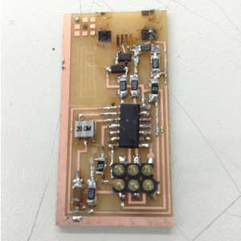
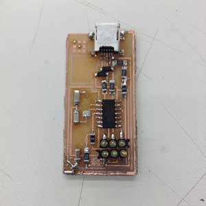
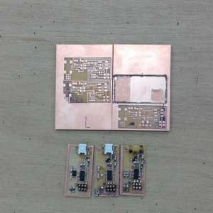
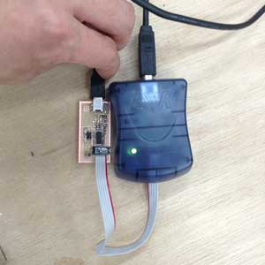
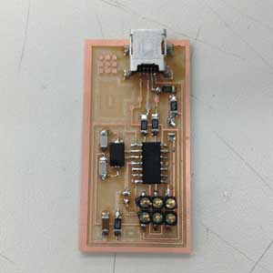

Kousuke Kikuchi
Fab Academy Participant and PhD Candidate
Week 4: Electronics Production
This week's assignment was that making In-System Programing based on AVR processor. My cognition of this system is similar one as Arduino. If I am wrong, please notify me. This process of making ISP consisted of three processes: engraving circuit, soldering, uploading a firmware via AVR controller.
1. Engraving circuit
Hacking via Fab Modules is the easiest way to hollow circuit board. But, the RC232 to USB converter by StarTech is required. Since we do not have that one, I use normal converter and "Dr. Engrave" which is native software of Rolland.
1.1 Designing electronic circuit at EAGLE.
EAGLE is the free software which can be downloaded from this web site. Although most PCB can have multi-layered circuit, the schematic of circuit must be designed with ONE layer of the board. After output LINE layer and the CUT layer with png format files. However, I do not have enough time to design the circuit, I used FabISP44.
1.2 Loading LINE png format file and executing
We must prepare the circuit board with a sacrifice board attached to the Modela's board.

Open "Dr. Engrave" and load the picture. After set the pitch as 0.1[mm], Dr. Engrave can automatically calculate the path of Modela. We must change the 1/64 inches end mill before the Z-axis calibration. Although we must set Z-axis original point, it is very difficult to set Z=0 as the surface of board. Hence, I did like this.

I loosened the end mill screw and it fell to Z=0 based on gravity!
After the calibration, the depth of engraving is set up. In my case, I set the depth of engraving as 0.15[mm] and pitch of it was 0.10[mm]. In Fab Modules, 0.10[mm] is the recommended depth, however I found hollowing little bit more than Fab Modules standard is easier at soldering than 0.15[mm] of engraving. EXECUTION!
1.3 Cut the circuit
To cut down the circuit, draw the rectangle which is bigger than the circuit. We must change the 1/32 inches end mill and set 2.0[mm] for depth of engraving.
1.4 Accidents
I failed 4 times at making circuit. The problems of the failure are non-flat circuit board and no-proper calibration. Also, minor incident is the path of the end mill is not properly illustrated. So, user should check these points.

1.5 Tips
Engraving circuit takes about one to two hours. If there is no one to use Modela, novice should engrave other circuit for soldering accidents.
Also, if we try to stop the engraving, we must push "view" button of Modela, then delete its output file which remained at computer. After pushing both "up" and "down" buttons, pull out the USB connector of Modela. After stop brinking the light of "view," insert USB connector. Modela is ready for moving.
2. Soldering
2.1 All parts used in FabISP
Resisters:
100 [Ω] x 2
499[Ω] x 1
1[kΩ] x 1
0[Ω] x 1 ( which can be used as Jumper
Resister can deteriorate the flow of electricity.
Capacitors (We call Capacitor as Condenser):
1[μF] x 1
10[pF] x 2
Cristal:
20[MHz] x 1
These parts can not have polarity. Accoding to web page, this material can
AVR microcomputer:
AVR ATtiny44 x 1
There is a circle on the top which is the sign of polarity.
Diodes:
3.3[V] x 2
Diodes allow electricity flow only one way. When we look the details of it, we can find a line on the top, On this side electricity flows to the other side.
2.2 Required items
Required items at soldering is shown below.
sharpen soldering iron
narrow solder
copper mesh which sucks up liquid solder.
pinset
2.3 Soldering
Soldering with tiny parts is quite difficult for novice. In fact, I failed to solder twice. The minutiae of the problems is shown below.
Over consumption of solder will decrease the chance to recover from the failure and induce over heating on copper. Over heating of copper will detach copper from the board. That board will not be available for the circuit because copper was electoronically separated from the circuit.
To avoid this problem, proper use of solder and a solder iron should be done. In my case, I found the knack of tiny soldering. I melted a bit of solder in one place and placing the parts on it. Melting solder enabled the parts consolidate to the board. After that, I soldered the other sides.
2.4 Accidents
Wrong connection of AVR.

Tear down the circuits.

All trials.

3. Uploading firmware
The process to upload the firmware to AVR consists of three steps: test of th ecircuit, AVR programing libraries and uploading.
3.1 Test of circuit
After the connection of AVR controller and USB into FabISP, the AVR controller indicate the status from the color of light. Green is good, yellow means something wrong with power socket. Red light indicates there is significant problem on the circuit which includes short circuit, cold joint.

3.2 Installing related applications
If we verify the connectivity of the circuit, AVR related program should be installed. The system requirements for AVR programming are gcc, Avrduve. I tried to install via MacPorts, but my attempt was failed. I basically used native application of gcc, and installed its related files.
3.3 Uploading firmware
Firstly, the firmware can be downloaded from the web page. Move to the downloaded directory, and make files.
make clean
make hex
sudo make fuse
sudo make program
If there is no error regarding this fimware, Mac user can check the FabISP from the system profiler.
4. But
I found later I forgot to solder the diodes on this FabISP, but it works. Why?

Caveat about the diodes used in FabISP

(Feb 18, 2013) My hypothesis
The diodes which I forgot to solder prevent undesirable electronic flow into PC which might culminate in breaking computer.With diodes near USB connector, they can prevent the flow of electricity because of the diode polarity which only allows the electronic flow from one side to the other. From this schematic, diodes can flow electricity from C to A which means Ground. If there are no diodes, electornic directly proceed to computer. FabISP can be worked without the diodes near USB pin, entailing the risk of breakdown of PC. So, I strongly recommend to solder the diodes near connector.
(Feb 19, 2013) Advice from Joel, FabLab Manchestor
These diodes can decrease the voltage from original USB voltage 5.0 [V] to 3.3[V] whose voltage is suitable for AVR. AVR requires 2.0 to 3.6[V], but some of the AVR allow over 5.0[V] of electricity. My AVR ATtiny44 permitted 5.0[V], so, I can upload the bootloader to AVR. Other AVR controller might be clashed due to the overflow.
However, most AVR controllers require less voltage than usual USB power suply. Hence, a decrease of voltage should be implemented. The diodes used in this schematic are so-called as Zenner Diode, which flows electricity with certain voltage. In this case, by placing 3.3[V] Zenner diodes near USB power supply, reduction of voltage can be achieved. As a result, AVR can attain enough power to work!
Thanks to
A Firmware-Only USB Driver for the AVR
Joel Rae, FabLab Manchester